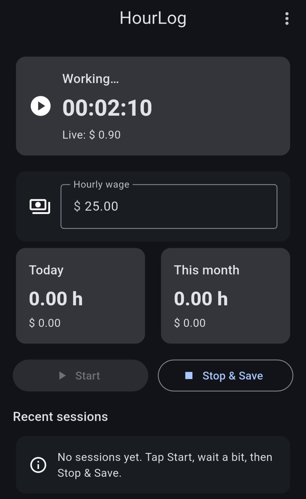
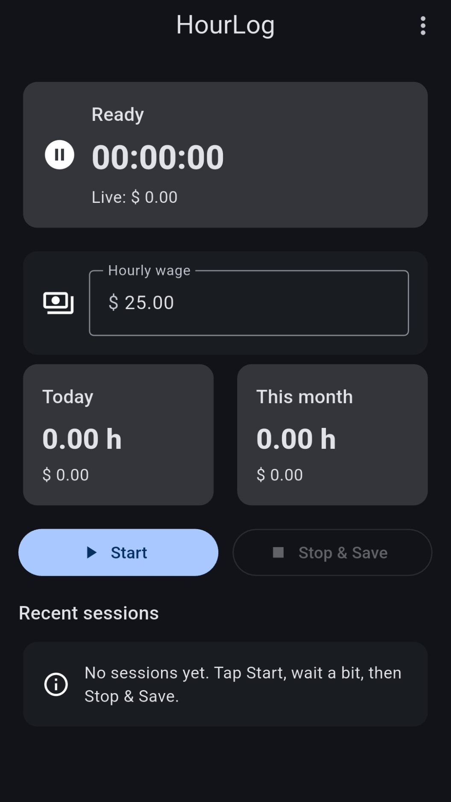
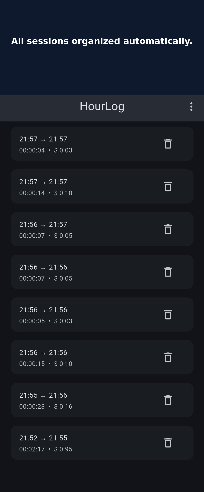

Track your hours. See your earnings.
HourLog is a simple Android app for tracking work hours, hourly pay, and recent work sessions in one clean place. It is built for people who want a fast and practical work hours tracker without extra clutter. You can set your hourly wage, start a session in one tap, watch your live earnings update while you work, and check daily or monthly totals whenever you want. If you are looking for an easy work time tracker, shift tracker, earnings tracker, or hourly wage calculator, HourLog is designed to make that process simple.
Track your work. Watch your earnings grow.
HourLog lets you track work in real time with a clean live session view. While you are working, the app shows your active timer and estimated earnings as they grow. This makes it easy to stay aware of both your time and your pay during a shift. Whether you are logging freelance work, part-time jobs, side gigs, or regular shifts, the live tracking screen gives you a quick and clear overview without distractions.

Set your hourly wage in seconds
Getting started with HourLog is fast and simple. Just enter your hourly wage and you are ready to begin tracking. The dashboard gives you a clean overview of your current setup, your start button, and your main work tracking controls. This makes HourLog useful as a daily work hours tracker for anyone who wants to start logging time quickly, without complicated settings or unnecessary steps. It is designed to be simple enough for everyday use and practical enough for real work.

All your work sessions in one place
HourLog keeps your recent work sessions organized in a clean and easy-to-read list. You can quickly review when you worked, how long each session lasted, and how much you earned. This makes the app useful not only for live tracking, but also for checking your work history later. If you want a simple Android app for tracking work sessions, reviewing shift history, and keeping your hours and earnings together, HourLog gives you that overview in one place.

A simple work hours tracker for everyday use
HourLog is made for people who want to track their work hours and pay with as little friction as possible. The app focuses on the essentials: an hourly wage field, a live timer, daily totals, monthly totals, and a recent sessions list. That makes it useful as a work hours tracker, pay tracker, earnings tracker, shift tracker, and time tracking app for Android.
Many time tracking apps try to do too much, but HourLog is intentionally simple. It is built for quick use, clear numbers, and a clean interface that makes sense right away. If you want to log your hours, monitor your earnings, and keep a better overview of your work sessions, HourLog gives you a lightweight and practical solution that is easy to use every day.
The app is especially helpful for freelancers, part-time workers, contractors, shift workers, and anyone who wants a straightforward way to keep track of time worked and estimated earnings. By combining live tracking with session history, HourLog helps you stay organized from the moment you start working to the moment you review your past sessions.